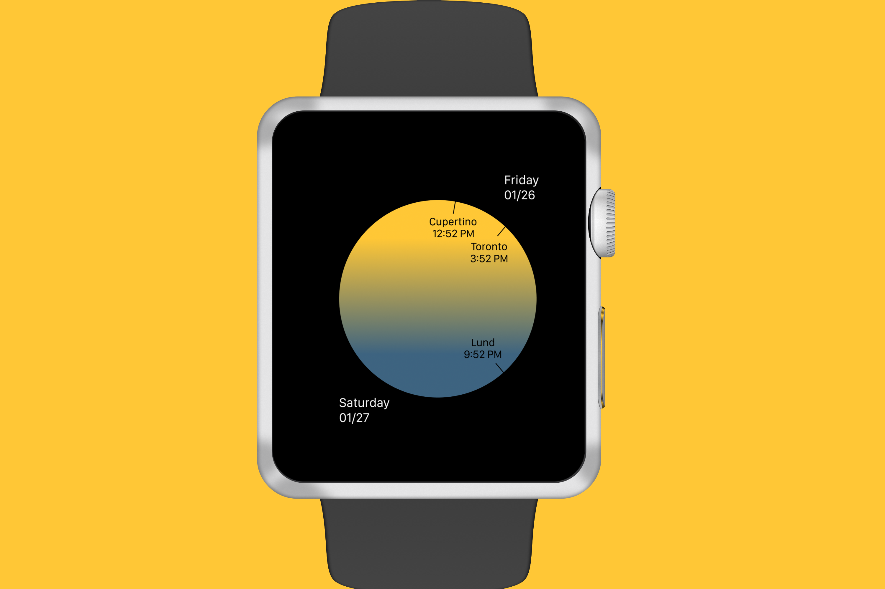

Dusk2Dawn: Apple Watch Timezone App

Problem
In the last year, my boyfriend has moved from Canada to the US and then Sweden. With him moving to England for the summer before returning home, I wanted an easier way to keep track of the time where he was.
Although there were time zone widgets in the clock app on my phone, they weren’t very visually attractive and gave me more information than I was seeking. I also wanted to look at what a clock app on a digital interface like the Apple Watch could look like. That was the birth of Dusk2Dawn.
Research
I was particularly inspired by the
Lunar app as well as
this concept by Che Harvey. The use of bright colours and goal of communicating time in a more human way, whether through friends or natural patterns served as a great starting point for my process.
The
WatchOS design guidelines provided by Apple helped me to tailor my design approach to align with the original design philosophy of the product. Focusing on the specific ideals of being mindful and focused when communicating with the user, I set out to create a glanceable and actionable app that conveyed only the most relevant information.
Prototypes
Prototypes in chronological order, created in Figma
When beginning on my design, I originally had begun with the idea of a gradient from dusk to dawn and a minimalist watch face. I was especially tied to the idea of a minimalist watch face because of the Apple Watch’s role in daily life as a non-intrusive, lightweight way to access relevant information in a timely manner.
The focal concept of this minimalist design was the idea of using a 24 hour clock. A more obscure, less familiar style of clock face would mean some confusion moving from the 12 hour to 24 hour format for most users. Therefore, the concept of time that was present on the screen had to convey information in an easily digestible form. I wanted colour and typography to carry symbolism in order to minimize the amount of descriptive text that a user would need to understand my design.
After a few iterations and consulting with users, two visual changes were made — the colour palette and how times were displayed. I moved from a sunset colour palette to a yellow to blue gradient in order to better convey the movement of time from morning to night. Furthermore, I eliminated icons and instead used notches, a familiar symbol from watch faces, to illustrate where a location’s time was relative to the 24 hour clock. The result was a clean interface with time, location and the relationship between time and location displayed using text, colour and familiar visual analogies from the world of watches.
Reflection
This was one of the toughest projects I have tackled to date. With so little space and emphasis on minimal design, every element I chose to incorporate or remove made key differences in the user experience. Some ideas I have for future iterations of this design are the ability to fast forward or rewind the time to plan times, animations like stars and clouds with haptic feedback, and a varied colour gradient aligned with the weather in the location of the user.
Try out the Figma prototype
here. If you have any ideas for what could be improved, I’d love to hear your feedback! :)
Thank you for reading!